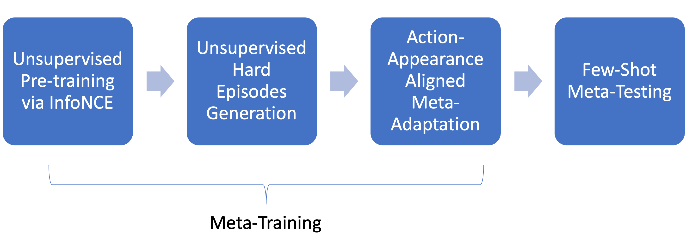
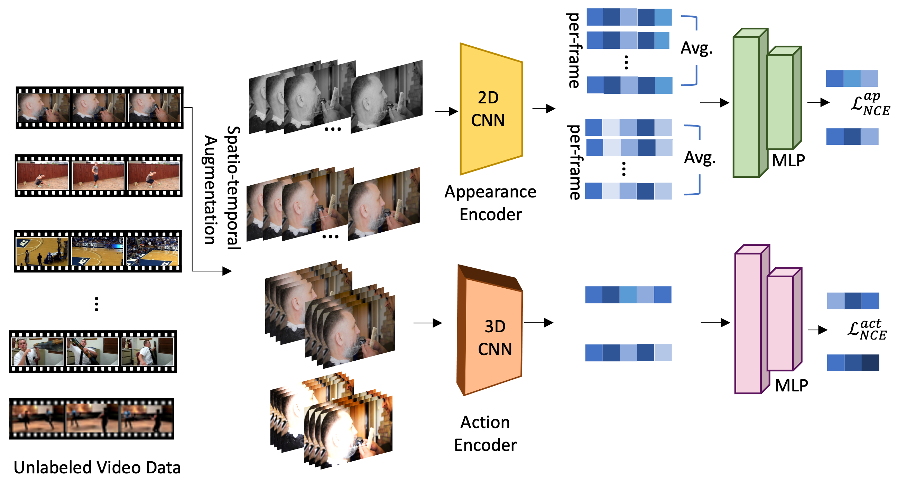
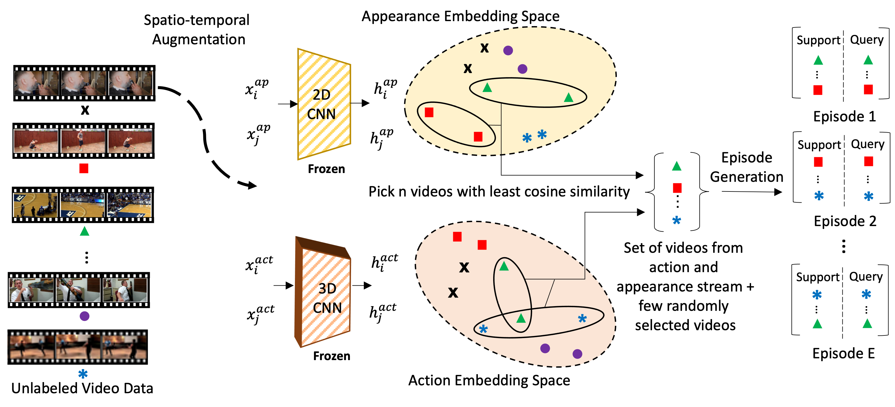
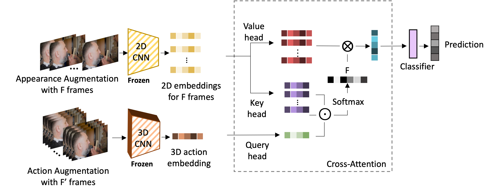
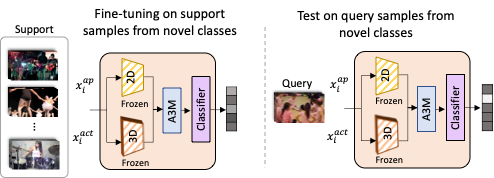

MetaUVFS: Unsupervised Few-Shot Action Recognition
via Action-Appearance Aligned Meta-Adaptation
ICCV 2021 (Oral)
- Jay Patravali* Oregon State University
- Gaurav Mittal* Microsoft
- Ye Yu Microsoft
- Fuxin Li Oregon State University
- Mei Chen Microsoft
Abstract
We present MetaUVFS as the first Unsupervised Meta-learning algorithm for Video Few-Shot action recognition. MetaUVFS leverages over 550K unlabeled videos to train a two-stream 2D and 3D CNN architecture via contrastive learning to capture the appearance-specific spatial and action-specific spatio-temporal video features respectively. MetaUVFS comprises a novel Action-Appearance Aligned Meta-adaptation (A3M) module that learns to focus on the action-oriented video features in relation to the appearance features via explicit few-shot episodic meta-learning over unsupervised hard-mined episodes. Our action-appearance alignment and explicit few-shot learner conditions the unsupervised training to mimic the downstream few-shot task, enabling MetaUVFS to significantly outperform all unsupervised methods on few-shot benchmarks. Moreover, unlike previous few-shot action recognition methods that are supervised, MetaUVFS needs neither base-class labels nor a supervised pretrained backbone. Thus, we need to train MetaUVFS just once to perform competitively or sometimes even outperform state-of-the-art supervised methods on popular HMDB51, UCF101, and Kinetics100 few-shot datasets.
MetaUVFS: Pipeline

The model pipeline for MetaUVFS consists of four stages as shown above. The first three are part of the meta-training phase and the last one is the few-shot meta-testing phase.
Unsupervised Pretraining via InfoNCE

We pretrain a two-stream visual encoder comprising of a 2D CNN based appearance stream to specialize in learning spatial appearance features and a 3D CNN based action stream to specialize in learning spatio-temporal action related features. In the absence of supervision, we leverage self-supervision from over half a million unlabeled videos via contrastive learning (InfoNCE).
Unsupervised Hard Episodes Generation

To specialize the two-stream encoder for downstream few-shot tasks, we perform unsupervised episodic meta-training. We use hard augmentations of unlabeled data to generate episodes where one augmentation behaves as the support and the other behaves as the query.
Action-Appearance Aligned Meta-Adaptation (A3M)

We design a novel Action-Appearance Aligned Meta-Adaptation (A3M) module to combine the action and appearance features. A3M module applies a cross-attention to learn a soft correspondence between the two-stream features. We use MAML to train A3M via episodic meta-training used unsupervised hard episodes generated above.
Few-Shot Meta-Testing

Once meta-trained without any supervision, MetaUVFS can be subjected to test episodes having unseen classes as part of few-shot meta-testing.
Results
We evaluate MetaUVFS on standard video few-shot benchmarks – UCF101, Kinetics100, HMDB-51. For unsupervised pretraining, we utilize half a million unlabeled videos from Kinetics700 dataset. We tested on standard 5-way 1-shot and 5-way 5-shot scenarios. The accuracy is reported as an average over 10K randomly generated episodes from novel classes.
Significantly outperforms unsupervised state-of-the-art video representation learning methods
Outperforms/On-par with supervised few-shot action recognition methods
Citation
Acknowledgements
The website template was borrowed from Michaël Gharbi and Jon Barron.